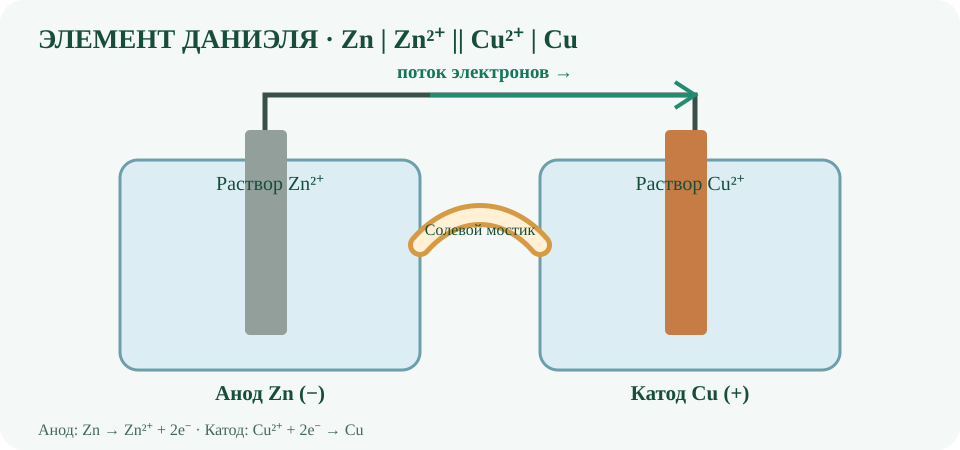

Окисление
Отдача электронов; степень окисления повышается.
ЧАСТЬ III · ГЛАВА 10
Окислительно-восстановительные реакции сопровождаются изменением степеней окисления атомов. В простых ионных моделях их удобно описывать как отдачу и присоединение электронов; в ковалентных соединениях изменение степени окисления отражает перераспределение электронной плотности.
Отдача электронов; степень окисления повышается.
Присоединение электронов; степень окисления понижается.
Окисление и восстановление всегда происходят одновременно.
Цинк отдаёт два электрона и окисляется; ионы меди принимают их и восстанавливаются.
Степень окисления — формальная величина. Её находят по согласованным правилам, а затем проверяют, что сумма степеней окисления соответствует общему заряду частицы.
В нейтральной молекуле сумма равна нулю. Водород обычно +1, кислород −2:
Степень окисления серы равна +6. Это формальный результат правил учёта электронов, а не утверждение о заряде атома серы +6.

В гальваническом элементе самопроизвольная окислительно-восстановительная реакция превращает химическую энергию в электрическую. Полуреакции пространственно разделены, а электроны проходят по внешней цепи.
На аноде цинк окисляется: Zn → Zn²⁺ + 2e⁻. В гальваническом элементе анод отрицателен.
На катоде ионы меди восстанавливаются: Cu²⁺ + 2e⁻ → Cu. В гальваническом элементе катод положителен.
Электроны во внешней цепи движутся от цинкового анода к медному катоду. В записи элемента одна вертикальная черта обозначает границу фаз, а двойная — солевой мостик или пористую перегородку. Мостик обеспечивает перенос ионов и поддерживает электронейтральность растворов.
Для элемента Даниэля стандартная ЭДС при 25 °C и стандартных состояниях веществ (активность растворённых ионов равна 1) приблизительно равна +1,10 В. Здесь используются стандартные потенциалы восстановления.
Стандартная ЭДС относится к стандартным состояниям. При других активностях ионов потенциал элемента меняется согласно уравнению Нернста:
При 25 °C: E = E° − (0,05916 В / n) log₁₀ Q. Здесь Q — реакционное отношение, составленное из активностей продуктов и реагентов; чистые твёрдые вещества в Q не включают.
Для реакции Zn + Cu²⁺ → Zn²⁺ + Cu: Q = a(Zn²⁺) / a(Cu²⁺), поэтому E = 1,10 В − (0,05916 В / 2) log₁₀ Q. Если отношение активностей Zn²⁺/Cu²⁺ растёт, ЭДС уменьшается; если уменьшается — ЭДС растёт.
Уравнение применяют к обратимо работающему элементу при заданной температуре. В разбавленных растворах активности иногда приближённо заменяют относительными концентрациями; это приближение не универсально.
Введите безразмерные активности ионов (положительные значения). Расчёт использует 25 °C, E° = 1,10 В и n = 2.
ЭДС элемента: 1,1000 В
В реакции Zn + Cu²⁺ → Zn²⁺ + Cu определите восстановитель.